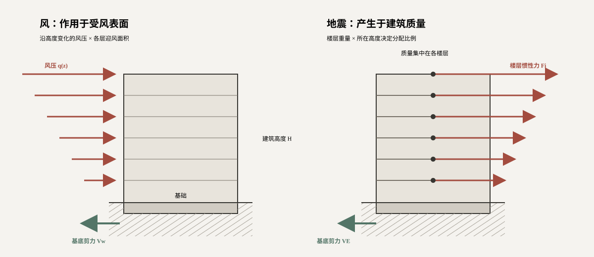

风荷载：风压乘以受风面积
把建筑各层迎风面作为受荷区域。该层风压越大、迎风面积越大，分配到该层的水平力就越大。
LATERAL ACTIONS · ESTIMATION LAB
风从建筑外部推来，地震作用则来自建筑自身质量的惯性。把矩形规则建筑简化为逐层受力的整体，就能在方案阶段估计水平力如何沿高度分布，以及基础需要抵抗多大的剪力和倾覆力矩。
核心概念 / 01
先分清力从哪里来，再决定怎样估算。风看受风表面，地震看楼层质量；两者最后都汇入整体抗侧力体系。

把建筑各层迎风面作为受荷区域。该层风压越大、迎风面积越大，分配到该层的水平力就越大。
地面运动时，楼层质量因惯性产生水平作用。总剪力确定后，还需按各层重量和高度进行分配。
各层水平力之和形成基底剪力；各层力对基底取矩之和形成倾覆力矩，两者共同控制抗侧体系的概念布置。
这里的任务是建立荷载量级与分布概念。实际设计还需根据场地、风环境、结构动力特性和现行规范确定参数，并检查构件与节点。
交互实验 / 02
拖动参数，观察矩形建筑各层水平力箭头和计算结果同步变化。红色表示外部作用或惯性作用，绿色表示基底抗力。
层数与层高只在此处设置，风、地震及对比图始终使用同一建筑。
只改变风的作用强度与受风面积，不改变地震参数。
只改变楼层质量与总剪力水平，不改变风荷载参数。
体型系数 μs 固定取 1.3。为突出沿高度变化的趋势，本实验另设 μz,i = 0.6 + 0.4Hi/H；该高度系数只是教学假定，不是规范查表值。
Fw,i = w0 μz,i μs B h
Vw = n∑i = 1 Fw,i
Mw = n∑i = 1 Fw,iHi
关系来源：风压转化为楼层力的基本关系参照《建筑结构荷载规范》GB 50009 的风荷载表达；基底剪力与倾覆力矩由静力平衡求得。本页的楼层集中方式和高度系数作了教学简化。
各层采用相同重量 Gi，以底部固定、水平惯性力逐层作用于楼层的简化模型估算。先求总剪力，再按“楼层重量 × 楼层高度”分配。
VE = α n∑i = 1 Gi
Fi = VE · GiHin∑j = 1 GjHj
ME = n∑i = 1 FiHi
关系来源：总剪力与逐层分配参照《建筑抗震设计规范》GB 50011 底部剪力法的基本思路；倾覆力矩由静力平衡求得。本页省略规范中的修正项与适用条件，仅用于规则模型的概念教学。
两幅图使用完全相同的层数 n 和层高 h，并分别读取页签上方独立设置的风荷载、地震作用参数。即使基底剪力接近，合力高度和倾覆力矩也可能不同。
H̄ = n∑i = 1 FiHin∑i = 1 Fi = M / V
符号含义：H̄ 为各层水平力合力的作用高度；Fi 为第 i 层水平力；Hi 为该层距基底的高度；M、V 分别为对应作用的基底倾覆力矩与基底剪力。
模型说明：风实验仅演示风压、迎风面积与高度变化的关系；地震实验采用等效水平力分配。所有系数均为可调教学参数，不能直接用于实际工程施工图设计。本节按逐层力计算合力高度：默认风荷载 H̄/H ≈ 0.59024；等层重地震模型的 H̄/H 随层数改变。下一节的 0.50／0.65／0.70 是另一组预设简化算例，不与本节参数自动同步。
学习完成：风从受风面积出发，地震从建筑质量出发，两者最终都转化为整体剪力与倾覆力矩。